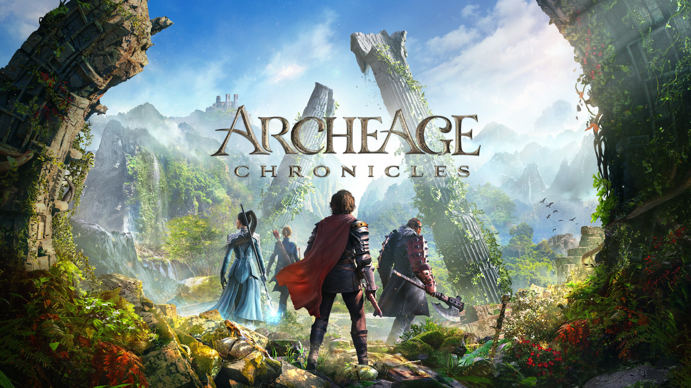
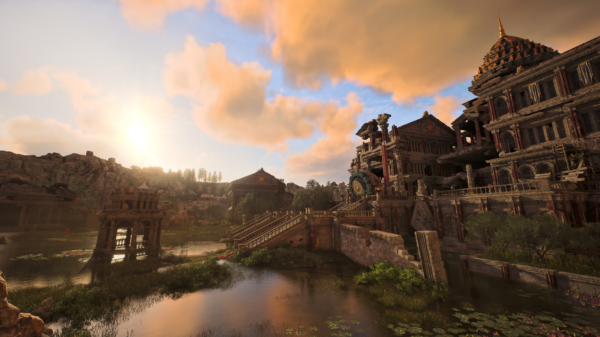
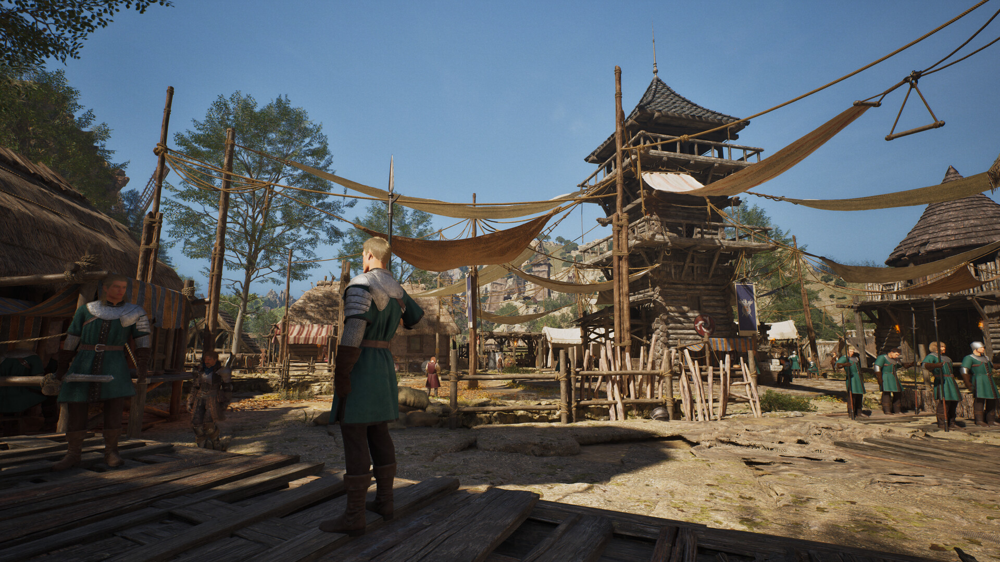

아키에이지크로니클 내용정리 세계관부터 전투 생활콘텐츠까지, 스팀 데모 기간과 출시일은 언제인지
아키에이지 크로니클은 XLGAMES가 만드는 원작 아키에이지 세계관 계승 오픈월드 액션 MMORPG로, 정식 출시일은 아직 미정이고 PC(Steam) 데모가 2026년 10월 27일 오전 2시(KST)까지 열려 있는 게임입니다. 이름이 비슷한 게임이 여럿이라 헷갈리기 쉬운데요, 스팀 상점 페이지와 개발사 공식 공지, 보도 내용을 기준으로 하나씩 갈라서 짚어 볼게요. 데모가 끝나면 내용이 바뀔 수 있어서 이 글은 10월 21일 기준입니다.

모험가들이 무너진 유적 앞에 선 키비주얼이에요
이미지 출처: Steam 아키에이지 크로니클 상점 페이지 (XLGAMES)
아키에이지 크로니클은 어떤 게임인가요?
아키에이지 크로니클은 Steam 상점 기준으로 XLGAMES가 개발과 배급을 모두 맡은 오픈월드 액션 MMORPG이고, 원작 아키에이지의 세계관을 이어받은 PC 신작이에요.
- 장르 태그: 액션, 어드벤처, 대규모 멀티플레이어, RPG, 앞서 해보기
- 지원 기능: MMO, 온라인 PvP, 온라인 협동, 컨트롤러, 가족 공유
'아키에이지' 이름이 붙은 게임이 여럿이라서 아래처럼 갈라 두면 편해요.
| 이름 | 어떤 게임인지 |
|---|---|
| 아키에이지 크로니클 | 이 글의 주인공, XLGAMES의 오픈월드 액션 MMORPG |
| 원작 아키에이지 | 크로니클이 세계관을 이어받은 원작이에요 |
| 아키에이지 워 | 카카오게임즈가 서비스하는 PC·모바일 MMORPG, 크로니클과는 별개예요 |
| 아키에이지 S | 카카오게임즈가 글로벌 퍼블리싱하는 별개의 신작(자유의 해협) |
세계관은 원작에서 어떻게 이어지나요?
크로니클의 이야기는 전설로만 전해지던 '원대륙'이 다시 발견된 '개척자의 시대'에서 시작하고, 플레이어는 컴퍼니 직원이 된 노련한 탐험가로 등장해요.
고대 유적을 탐사하던 중 '밤하늘 쉼터'에 비행선이 추락하는데요, 그 사건을 살피는 조사단(참관인)에 합류하면서 네거리 조합의 로레아 카신, 의문의 남자 빌과 마주친다는 게 상점 소개에 나온 도입부랍니다. 스포일러가 될 수 있어서 여기까지만 적을게요~ 공식 사이트 영문 소개에는 원대륙의 영문 표기로 Auroria가 쓰여요.

물가에 자리한 거대한 고대 건축물이에요, 유적 탐사 이야기와 잘 어울리는 풍경이죠
이미지 출처: Steam 아키에이지 크로니클 상점 페이지 (XLGAMES)
전투와 생활 콘텐츠는 어떤가요?
전투는 대상을 지정하지 않는 논타겟 액션이고, 생활 콘텐츠로는 수렵·채집, 하우징, 농사, 제작, 무역이 공식 소개에 올라 있어요.
| 구분 | 공식 소개 내용 |
|---|---|
| 전투 방식 | 전통적인 MMORPG 전투의 한계를 벗어난 유연한 논타겟 액션 |
| 빌드 | 다양한 무기와 스킬을 조합해 나만의 빌드 구성 |
| 움직임 | 점프와 낙하, 근접·원거리·마법 전투 |
| 생활 | 수렵·채집, 하우징, 농사, 제작, 무역(교역) |
저는 점프와 낙하까지 전투에 쓰는 액션이라는 소개가 눈에 들어오더라고요ㅎㅎ 개발사 공지를 보면 PvP는 채널 단위로 돌아가고 채널당 약 100명이 들어가며 일반 채널과 PvP 채널이 나뉩니다(10월 4일 «Let's Talk PvP»). 성장 쪽은 주 스탯이 6종(영문 공지 원문 기준: Strength·Agility·Constitution·Intelligence·Talent·Endurance, 한국어 공식 명칭은 확인하지 못했어요)이고 무기마다 특성 트리가 따로 있다고 소개됐어요(10월 15일 «How Progression Works»). 같은 상점 스크린샷에는 천막과 망루가 이어진 마을 풍경도 올라와 있는데, 사람들이 오가는 마을이라 생활 콘텐츠 쪽 분위기를 떠올려 보기 좋답니다.

천막과 목조 망루, 초록 옷의 경비병이 보이는 마을 풍경이에요
이미지 출처: Steam 아키에이지 크로니클 상점 페이지 (XLGAMES)
- 하우징 방식
- 정식 출시일과 가격(금액)
- 한국 서비스 구조, 한국 대상 테스트, 사전예약, 콘솔 일정
지금까지 일정은 어떻게 흘러왔나요?
아키에이지 크로니클은 2024년 9월 공개를 시작으로 2026년 9월 북미 네트워크 테스트, 2026년 10월 스팀 데모까지 이어졌고, 정식 출시일은 아직 발표되지 않았습니다.
| 시기 | 내용 |
|---|---|
| 2024년 9월 | 소니 State of Play에서 공개, 가칭 '아키에이지2'에서 '아키에이지 크로니클'로 확정(쿠키뉴스 보도 기준) |
| 2026년 9월 12~13일 | 북미 네트워크 테스트, 미국·캐나다 Steam 이용자 한정이라 한국은 제외(미국 동부 시간 12일 19시~13일 1시) |
| 2026년 10월 20~27일 | 스팀 데모(한국 시간 20일 오전 2시~27일 오전 2시) |
| 올해 안 | 얼리 액세스 예정(개발사 공식 서한 기준, 날짜 미공개) |
| 미정 | 정식 출시일 |
스팀 데모는 어떻게 받나요?
스팀 데모는 한국 시간 2026년 10월 20일 오전 2시부터 10월 27일 오전 2시까지 열리고, 별도 등록 없이 스토어 페이지의 '데모 다운로드' 버튼으로 누구나 받을 수 있습니다. 스팀 넥스트 페스트에 맞춰 열린 데모라 PC(Steam)에서만 해볼 수 있어요.
- 포함: 초반 지역 '빛나는 해안'(Diamond Shores)의 일부
- 포함: 공개 빌드 중 처음으로 들어간 PvP
- 제외: 하우징·무역 등 일부 생활 콘텐츠
직업은 개발사 한국어 공식 공지(10월 20일 데모 오픈 안내) 기준으로 격투, 야성, 철벽, 마법 네 가지 클래스를 모두 플레이할 수 있습니다. 영문 공지 기준으로는 Warrior·Ranger·Berserker·Mage 4종인데, 한글 이름과 하나씩 짝은 공지에 나와 있지 않아요.
내 PC로 데모를 돌릴 수 있을까요?
Steam 상점 기준 최소 사양은 RTX 2060 SUPER급 그래픽과 16GB 메모리에 SSD 필수이고, 이 사양에서 1080p 낮음 설정, 업스케일러 품질 모드 기준 30프레임이 목표입니다.
| 항목 | 최소 | 권장 |
|---|---|---|
| 운영체제 | Windows 10 64비트 | Windows 11 |
| CPU | i5-10400 / Ryzen 5 3600 | i7-12700 / Ryzen 7 5700X |
| 메모리 | 16GB | 32GB |
| 그래픽 | RTX 2060 SUPER / RX 6600(VRAM 8GB) | RTX 4060 Ti 16GB / RX 7700 XT |
| 저장공간 | SSD 필수, 100GB | SSD 필수, 100GB |
| 목표 화질 | 1080p 낮음 30fps(업스케일러 품질 모드 기준) | 1080p 좋음 60fps(업스케일러 품질 모드 기준) |
이 값은 상점에 게재된 사양이라 데모 기준과 다를 수 있어요.
퍼블리싱은 어떻게 바뀌었나요?
아키에이지 크로니클은 카카오게임즈 퍼블리싱 예정이었지만, XLGAMES가 9월 15일 개발사 공식 Steam 공지(프로듀서 서한)에서 직접 퍼블리싱한다고 밝혔습니다. 카카오게임즈 쪽 사정은 공시와 보도 기준으로 정리해 봤어요.
| 날짜·출처 | 전해진 내용 |
|---|---|
| 2026년 9월 8일 MTN | XLGAMES 공시 기준으로 카카오게임즈가 신설법인 얼라인스튜디오를 통해 아키에이지·아키에이지 S의 IP, 인력, 배급계약을 약 392억 원에 인수하고 크로니클 배급계약은 해지(MTN 단독 보도) |
| 2026년 9월 15일 개발사 Steam 공지 | XLGAMES가 크로니클을 직접 퍼블리싱한다고 공식 발표(얼리 액세스는 올해 안 계획) |
2024년 공개 때는 카카오게임즈가 퍼블리셔로 발표됐으니 흐름이 꽤 바뀐 셈입니다. 다만 9월 8일 내용은 MTN 단독 보도라 세부는 달라질 수 있고, 출시 시기에 영향이 있을지는 확인하지 못했어요.
자주 묻는 질문
Q. 한국 서비스 일정이나 사전예약은 나왔나요?
한국 서비스 구조와 사전예약은 확인하지 못했어요. 대신 데모는 지역 제한 없이 전 세계에서 받을 수 있다고 공지돼 있어서 한국에서도 참여할 수 있습니다.
Q. 가격이나 과금 방식은 정해졌나요?
가격(금액)은 공개되지 않았지만 과금 모델은 바이 투 플레이(한 번 구매하는 패키지형)라고 개발사 영상(10월 7일 공지)과 인벤글로벌 보도에서 밝혔습니다. 얼리 액세스 시작 때는 게임 내 유료 상점을 운영하지 않고, 승패에 영향을 주는 P2W 요소도 배제한다고 해요.
Q. 콘솔로도 나오나요?
2024년 공개 때는 PS5, Xbox Series, PC로 소개됐다고 전해졌어요. 지금 공식 사이트에는 위시리스트 링크만 있어서 콘솔 일정은 확인하지 못했어요.
Q. 한국어는 지원하나요?
Steam 상점에 인터페이스, 음성, 자막 모두 한국어 지원으로 적혀 있어요. 안티치트는 XIGNCODE3이고, 폭력과 유혈 표현으로 성인 콘텐츠 표기가 붙어 있답니다.
Q. 공식 소식은 어디서 보나요?
공식 사이트, 공식 유튜브, 공식 X, 공식 디스코드가 있어요.
아키에이지 크로니클 정리
지금 분명한 건 데모가 10월 27일 오전 2시까지라는 점이에요. 저라면 종료 전에 받아서 초반 지역 분위기부터 보고, 출시일과 가격 같은 소식은 공식 발표가 나오면 다시 정리해 볼 것 같아요. 다들 즐겜하세요~
참고한 곳 (2026.10.21 기준)
· Steam 아키에이지 크로니클 상점 페이지 (공식)
· 아키에이지 크로니클 Steam 공지(개발사 서한·PvP·성장·데모 안내) (공식)
· 인벤글로벌: 개발사 영상, 바이 투 플레이 방향 (보도)
· MTN 2026년 9월 8일 보도 (보도)
· 쿠키뉴스 2024년 9월 25일 보도 (보도)